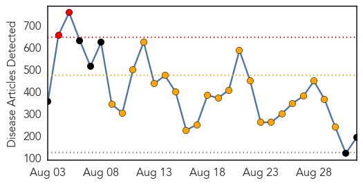
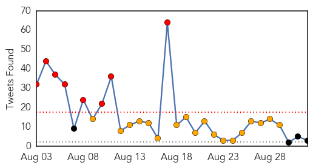
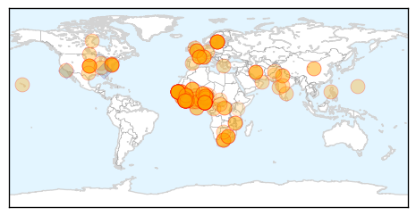
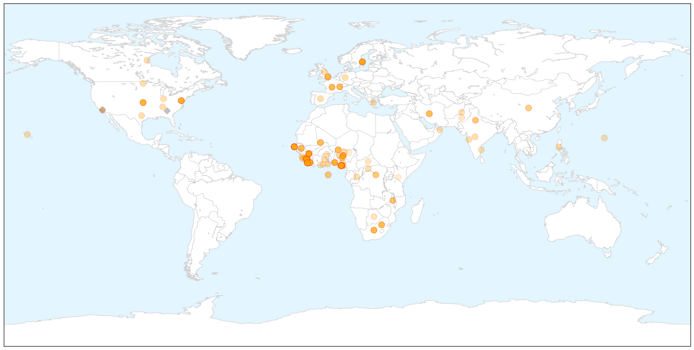
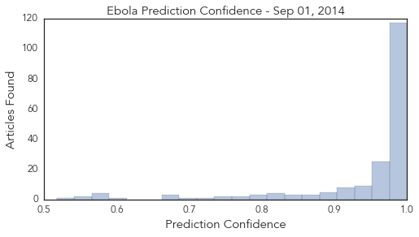

Unknown
30-Day Web Trend
1 alerts, 0 warnings

30-Day Twitter Trend
4 alerts, 0 warnings

Article Locations


Article Confidences

Top Articles:
- 0.866
- News, Information and Connections for Action
- 0.866
- Lesbian couple allowed to adopt child in Italy’s first such ruling -report
- 0.866
- Pakistan's national channel taken off air after protesters storm building
- 0.866
- Hong Kong police use pepper spray to disperse pro-democracy activists
- 0.786
- Hundreds of Colombian girls hospitalized after vaccinations
- 0.772
- ‘Urgent need’ to control rabies-spreading vampire bats
- 0.746
- On 3rd day, water contamination toll touches 200, 70-year-old dead
- 0.698
- Asia and the Pacific: Weekly Regional Humanitarian Snapshot (26 August - 1 September 2014) - Bangladesh
- 0.677
- New Advice for Vaccines to Stave Off Pneumonia
- 0.675
- Bat Lyssavirus Could Pose Threat to Humans, Animals
- 0.673
- When something medically goes wrong
- 0.630
- Cancer drive at schools - Gauteng
- 0.627
- Cyclospora illness count passes 300
- 0.602
- White People of South Africa Are the Reason for the AU Failure?
- 0.584
- Gonorrhoea on the rise in Denmark
- 0.547
- Obama calls for higher wages amid 'revving' US economy
- 0.547
- Americans detained in North Korea call for US help
- 0.547
- Video: Ukraine’s children return to school as fighting rages on
- 0.547
- Ukrainian forces retreat from Luhansk airport after clashes
- 0.547
- Spain orders custody for parents of ill British boy
- 0.547
- Rescue efforts under way after French apartment block blast
- 0.547
- Lesotho PM calls for regional peacekeeping force after ‘coup’
- 0.547
- French education ministry picture sparks racist abuse
- 0.547
- Death toll rises in Paris apartment building blast
- 0.521
- AIDS cure may come, but can we afford the cost?
- 0.507
- Humanitarian Implementation Plan (HIP) Palestine (ECHO/PSE/BUD/2014/91000) Last update: 30/07/2014 Version 3 - occupied Palestinian territory
- 0.506
- Over 200 Patients Benefit from Amref Health Africa Outreach - South Sudan
- 0.506
- Is Venezuelan Film ‘The Liberator’ a Historical Biopic or Propaganda Blockbuster? · Global Voices
Top Tweets:
-
No tweets found for Sep 01, 2014
Ebola
30-Day Web Trend
2 alerts, 22 warnings

30-Day Twitter Trend
5 alerts, 13 warnings

Article Locations

X

Article Confidences
Top Articles:
- 1.000
- What’s missing in the Ebola fight in West Africa
- 1.000
- Pundits panicking about Ebola hurt cause they mean to help
- 1.000
- Poor response to Ebola causing needless deaths -World Bank head
- 1.000
- Poor response to Ebola causing needless deaths
- 1.000
- Poor response to Ebola ‘causing needless deaths’
- 1.000
- Ebola: health fears stop British journalist from hosting awards
- 1.000
- Sweden looks into possible Ebola case
- 1.000
- Poor response to Ebola causing needless deaths: World Bank head
- 1.000
- Ebola: The Role of medical laboratory science, public health in humanitarian emergencies in Malawi
- 1.000
- Ebola Outbreak Spreads Fear As Suspected Case Found In Sweden
- 1.000
- Poor response to Ebola causing needless deaths, World Bank head says
- 1.000
- Ebola response ‘inadequate’ - Africa
- 1.000
- Ebola outbreak reaches Senegal, riots break out in Guinea
- 1.000
- Alarm as Ebola outbreak worsens in West Africa
- 1.000
- West Africa Ebola outbreak could infect 20,000 people, WHO warns
- 1.000
- Ebola Outbreak Hits 5th Country
- 1.000
- Schools, colleges and nurseries in North Wales given Ebola advice
- 1.000
- Ebola outbreak: Senegal monitors contacts of 1st patient
- 1.000
- Ebola outbreak: Senegal monitors contacts of 1st patient
- 1.000
- Poor response to Ebola causing needless deaths: World Bank head
- 1.000
- Trad Ruler Kicks Against Ebola Treatment Centre
- 1.000
- Ebola situation worrisome – US Doctor « Awoko Newspaper
- 0.999
- Ebola: Health Minister to meet state Commissioners as virus spreads
- 0.999
- First Ebola Case in Senegal Is 'Top Priority Emergency'
- 0.999
- WHO: First Ebola Case in Senegal Is 'Top Priority Emergency'
- 0.999
- Senegal monitors contacts of first Ebola patient
- 0.999
- Poor response to Ebola outbreak causing needless deaths, says World Bank head
- 0.999
- Major quarantine and experimental vaccines to curb Ebola
- 0.999
- WHO: Senegal Ebola case ‘a top priority emergency’
- 0.999
- There is a way to stem Ebola
- 0.999
- Nigeria to receive Ebola drug - Africa
- 0.999
- Africans in ND raise awareness, collect donations to combat Ebola
- 0.999
- Saudi Arabia Stops Issuing Visas To Workers From Ebola-Stricken Nations
- 0.999
- Man Hospitalized With Suspected Ebola In Sweden
- 0.999
- Ebola drugs: a factfile
- 0.999
- WHO: First Ebola Case in Senegal Is 'Top Priority Emergency'
- 0.999
- Senegal monitors contacts of 1st Ebola patient
- 0.999
- Senegal monitors contacts of 1st Ebola patient
- 0.999
- Health worker deaths mount as Ebola spreads
- 0.999
- Senegal becomes fifth African nation to be ravaged by Ebola
- 0.999
- Ebola virus is mutating fast, gene studies find
- 0.999
- WHO First Ebola Case in Senegal Is Top Priority Emergency
- 0.999
- ‘No Signs’ of Ebola in Swedish Man
- 0.999
- Health workers death toll mounts in West Africa as Ebola spreads
- 0.999
- Health workers death toll continues to mount as Ebola spreads
- 0.999
- NHIA Sensitizes Staff On Ebola
- 0.999
- Poor response to Ebola causing needless deaths – World Bank head
- 0.999
- What is missing in the fight against Ebola
- 0.999
- Senegal monitors contacts of 1st Ebola patient - National
- 0.999
- Ebola: Funerals, ghost towns, haunted health workers
Showing top 50 articles...
Top Tweets:
- 0.722
- RT: CDC is supporting the Ebola response through communication training & other public health activities. Learn more: http://…
- 0.658
- If you or someone you know may have been exposed to Ebola please call these numbers. EndEBOLAnow ebola http://t.co/FgLDsnzkyh